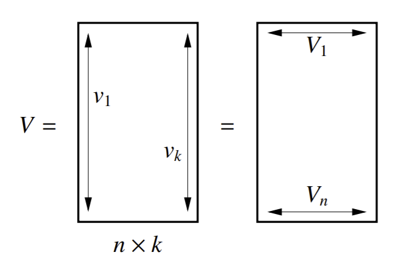
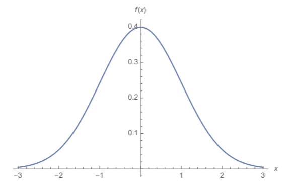
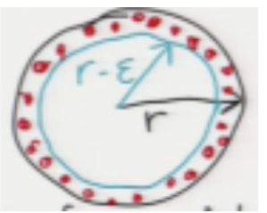

Multiple Eigenvectors and Random Projection¶
Clustering with Multiple Eigenvectors¶
So in the last chapter, we learned how to divide a graph \(G\) into two subgraphs/clusters, and divide those subgraphs recursively if we want more clusters. But there’s a better way. The Fiedler vector \(v_2\) tells us how to divide such graphs. However, there are several other methods to subdivide a graph into \(k\) clusters in one shot that use multiple eigenvectors. These methods use \(k\) eigenvectors in a natural way to cluster a graph into \(k\) subgraphs.
The first thing we do is set up our generalized eigensystem \(Lv = \lambda Mv\). From this, we calculate the first \(k\) eigenvector solutions \(v_1 = 1, v_2,...,v_k\). Then, we scale them such that \(v_iMv_i = 1\). Now, \(V^TMV = I\), where \(V\) has columns \(v_i\) as the eigenvectors with the \(k\) smallest eigenvalues. Such normalized eigenvectors are called M-orthogonal.
Geometry of High-Dimensional Spaces¶
While many concepts from the familiar 2D and 3D geometry carry over to higher dimensions, high-dimensional geometry often has weird properties as well.
For example, consider a random point \(p \sim N(0, I) \in \mathbb{R}^d\). What is the distribution of its length?
If \(d=1\), we have the one-dimensional standard normal distribution we are so familiar with. In this case, the distribution of the length of \(p\) would just be \(p\)’s value itself: most commonly close to 0, and less and less common the further out from 0.
Unfortunately, this concept absolutely does not carry over to higher dimensions. In high dimensions, most vectors (points) are at approximately the same distance from the mean. So most points \(p\) will actually lie on a thin shell.
To prove this, let’s look at the square of the distance. By Pythagoras’ Theorem, the squared distance from p to the mean is \(||p||^2 = p_1^2 + p_2^2 + ... + p_d^2\), where each \(p_i\) is sampled at random from a (univariate) normal distribution. The square of this (\(p_i^2\)) is now a chi-squared distribution.
When you add \(d\) I.I.D random variables, you scale their mean and variance by \(d\). So this means:
For large \(d\), \(||p||\) (length of random vectors) is concentrated in a thin shell around radius \(\sqrt{d}\) with thickness proportional to \((2d)^{\frac{1}{4}}\).
Note
The mean value of \(||p||\) isn’t exactly \(\sqrt{d}\), but it is close, because the mean of \(||p||^2\) is \(d\) and the standard deviation is much, much smaller. Likewise, the standard deviation of \(||p||\) isn’t exactly \((2d)^{\frac{1}{4}}\), but it’s close.
Let’s say \(d = 10^6\). This makes a million-dimensional egg with radius 1000, and the thickness of the eggshell is about 67, which is about 10 times the standard deviation. The vast majority of random points are in the thickness of this eggshell- NOT inside the egg!
There is a statistical principle hiding here. Suppose you want to estimate the mean of a distribution (chi-squared distribution in this case). Normally, you’d take a lot of samples and calculate the mean. The more numbers you sample, the smaller your standard deviation, and the more accurate your mean (probably) is. Guess what- calculating the length of a random vector from a million-dimensional normal distribution is exactly that!
We looked at a normal distribution. What about uniform? Consider concentric spheres of radii \(r\) and \(r-\epsilon\):
In high dimensions, almost every point chosen uniformly at random in the outer ball lies outside the inner (blue) ball.
The volume of the outer ball is proportional to \(r^d\), while the inner ball has volume proportional to \((r-\epsilon)^d\). So the proportion of total volume (\(r^d\)) taken up by the inner ball is given by \(\frac{(r-\epsilon)^d}{r^d} = (1 - \frac{\epsilon}{r})^d \approx \exp(-\frac{\epsilon d}{r})\). This proportion goes to 0 as \(d\) gets very large. For example, if \(\frac{\epsilon}{r} = 0.1\) and \(d = 100\), the inner ball has \(0.9^{100} = 0.0027%\) of volume.
So this means that for high dimensions, random points are nearly all in the outer shell. Note this is similar to normal distributions in high dimensions, where they all simply lie in a thin shell. What does this mean in general? In high dimensions, sometimes the nearest neighbor and 1,000th-nearest neighbor don’t differ much. Which means \(k\)-means and nearest-neighbors are less and less effective for large \(d\).
Angles Between Random Vectors¶
What is the angle between two random vectors \(p, q \in \mathbb{R}^d\)?
WLOG set \(q = \begin{bmatrix} 1 & 0 & 0 & ... & 0 \end{bmatrix} ^T\). The actual value of \(q\) doesn’t matter because \(p\) is uniformly distributed over all possible directions anyway. We know the angle \(\theta\) between two vectors is \(\cos \theta = \frac{p \cdot q}{||p|| ||q||}\). In this case, with our \(q\), we have \(\cos \theta = \frac{p_1}{||p||}\).
So \(E[\cos \theta] \approx \frac{1}{\sqrt{d}}\). If \(d\) is large, then \(\cos \theta \approx 0\), which means \(\theta \approx 90^{\circ}\). This means in high-dimensional spaces, two random vectors are almost always close to orthogonal- a high-dimensional vector is orthogonal to the vast majority of all other high-dimensional vectors.
Random Projection¶
Random projection is an alternative to PCA as a preprocessing tool. The main advantage it has is that it preserves distance between points.
In PCA, we project our original datapoints onto the PCA subspace- in random projection, we project, well, onto a random subspace. Random projection works best when projecting a very high-dimensional space to a medium-dimensional space. Because distance is (roughly) preserved, algorithms like k-means clustering and nearest neighbor classifiers will behave similarly but of course run much faster (since it’s lower dimensions).
How does it work? Well, the algorithm is complicated, but I’ll try to briefly explain it here.